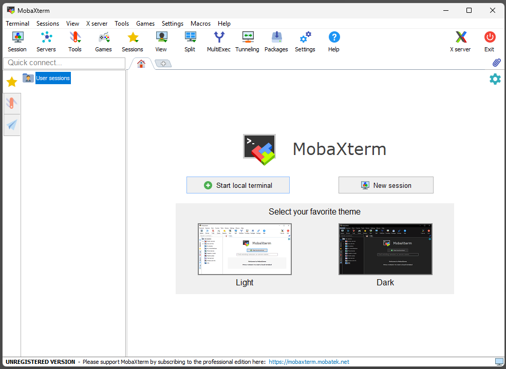
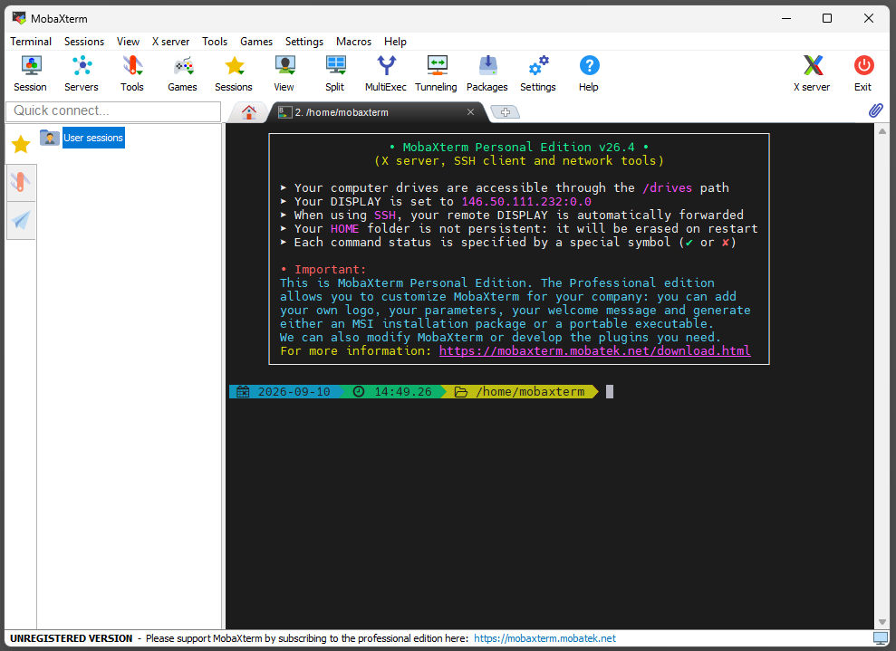
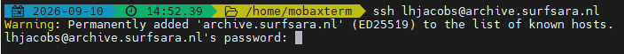
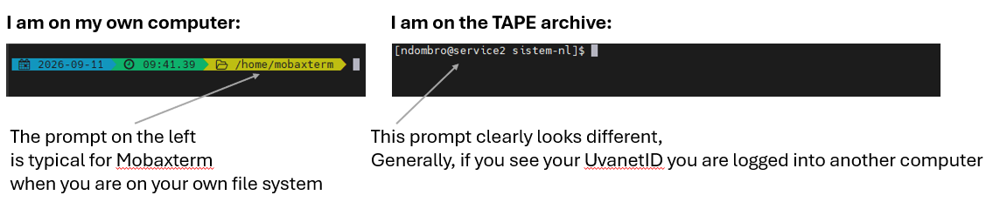
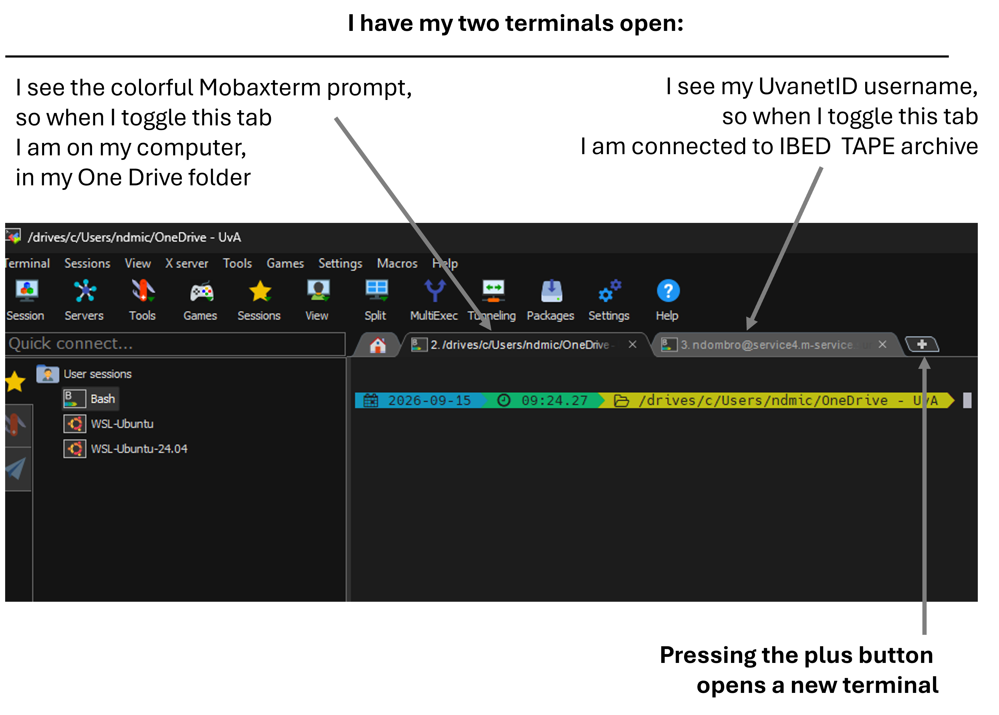

ssh uvanetid@archive.surfsara.nlUsing the IBED Tape Archive
What is the IBED Tape Archive?
The IBED Tape Archive is a long-term storage service hosted by SURF (the Dutch national ICT cooperative for research), reachable at archive.surfsara.nl. As mentioned on the Using an HPC page, Crunchomics is not an archiving system, so once an analysis is done it is a good idea to move raw data and important results somewhere safe for long-term storage. This archive is one such option for IBED researchers.
For more information about all data storage options, have a look at the Computational Support Team’s website. The IBED Tape Archive is a long-term storage option you can use for non-project funded data storage. You can get up to 5 TB of storage for free. Check the website for how to get access.
After requesting access each group can request to get its own folder in the archive. Access to a group’s folder is typically restricted to a few people (e.g. the PI or an appointed data manager), so ask whoever manages your group’s folder if you need access to it. If nobody in your group has access yet, or you need it extended to more people, this can be requested via the SURF Service Desk.
Step 1: Get a terminal
Connecting to the archive is done through a Unix-style terminal.
- Windows: if you don’t already have a terminal set up, see Setting up a bash command line. MobaXterm is a good pick for this workflow — download the portable Home Edition and save it to your desktop, no installation needed.
- Mac: you already have a terminal. Open Finder, go to Applications > Utilities > Terminal, or search for “terminal” with Spotlight.
Step 2: Connect to the archive
Opening MobaXterm shows the window below. Click “Start local terminal”.

The local terminal should look like this:

From this local terminal, connect to the IBED Tape Archive with:
Important: Throughout the tutorial, replace uvanetid with your own UvA network login ID (the same one you use for Crunchomics or other UvA services), e.g. ndombro.
The very first time you connect from a given computer, you may see a message like this instead of a password prompt:
The authenticity of host 'archive.surfsara.nl' can't be established.
Are you sure you want to continue connecting (yes/no)?This is expected — it just means your computer has never connected to this particular server before. Type yes and press Enter to continue.
Next, you will be asked for your password. While typing, nothing appears to move or change on screen, no dots, no cursor movement. This is normal: the password is still being entered, it is just not displayed.

Tip
Am I on my own computer or on the archive?
When you are new to the command line it can be confusing to tell whether you are still on your own computer or already logged into the archive. Generally, if the prompt shows your UvAnetID, you are logged into another computer (here, the archive):

Step 3: Explore your group’s folder
Once connected, move into your group’s folder in the archive. This page won’t go into detail on moving around folders, for a fuller explanation of cd and navigating a file system, see cd: Moving around folders. For example:
cd /archive/ibed/sistem-nl
Important
Always leave a space between a command (e.g. cd) and whatever comes after it (e.g. a folder path). cd/archive/... will fail, cd /archive/... will work.
Now you can look around:
# list what is in the folder
ls
# check the size of each folder/file
du -sh *
# list the contents of one specific folder
ls -l some_folder/Step 4: Create a folder and copy data into it
On the archive terminal (the one you connected with in Step 2), create a new folder and move into it:
mkdir new_folder_name
# Go into that new folder
cd new_folder_nameIt helps to print the full path of this new folder now, so you have it ready for the copy command later. Note it down, for example paste it into a text file:
pwd
# e.g. /archive/ibed/sistem-nl/rawdata_photos_sustainalabTo copy data in, you need a second, separate terminal that stays on your own computer (not connected to the archive). The copy commands below are run from there, not from the archive session above. In MobaXterm you don’t need a whole new window for this: press the “+” button to open a second tab, and click back and forth between the two tabs to switch between your own computer and the archive.

On your local terminal (the new tab, not connected to the archive): your computer’s drives are reachable from here under /drives, so to find a folder on your Windows C: drive:
cd /drives/c/some/path/to/your/folder
Important
Folder names with spaces
Windows folder names often contain spaces (e.g. a synced OneDrive folder called OneDrive - UvA). The command line treats a space as marking the end of a path, so a path containing spaces needs to be wrapped in quotes, otherwise the command will fail or only read part of the path:
cd "/drives/c/Users/uvanetid/OneDrive - UvA"From there, copy data to the archive with scp. Use -r to copy a whole folder:
scp -r folder_to_copy uvanetid@archive.surfsara.nl:/path/to/destination/folder
# e.g.
scp -r DCIM uvanetid@archive.surfsara.nl:/archive/ibed/sistem-nl/rawdata_photos_sustainalabTo copy a single file (or an already-compressed folder) instead, drop the -r:
scp DCIM.tar.gz uvanetid@archive.surfsara.nl:/archive/ibed/sistem-nl/rawdata_photos_sustainalabThe examples above copy data onto the archive. If you also want to copy data the other way, for example downloading something back from the archive to your computer, see the fuller explanation of scp in Start working on an HPC, which covers both directions.
If you want to compress a folder before copying it, tar can do that too. Run the command while still on your local terminal, since that is where the original folder is:
tar -czvf DCIM.tar.gz DCIM/Here, we create a new tar archive (-c), compress it with gzip (-z), do this verbosely so we can see what gets added (-v), and name the resulting file (-f, followed by the name we want to give it). The last argument (DCIM/) is the folder we are compressing.
Check that the copy arrived
Switch back to the archive terminal and check that your data is there, with a size that roughly matches what you expect:
cd /archive/ibed/sistem-nl/rawdata_photos_sustainalab
ls
du -sh *Other handy commands
Go back one directory:
cd ../scp is not specific to the Tape Archive, the same command moves data to or from any server you can ssh into, for example an HPC like Crunchomics:
scp your_file.tar.gz uvanetid@server_address:/path/to/destination